Anime Suggestions by Genres
Action
1. Attack On Titan

Attack on Titan is a Japanese anime series set in a dystopian world where humanity is on the brink of extinction, living behind massive walls to protect themselves from Titans—gigantic, man-eating creatures. The story follows Eren Yeager, who vows to eradicate the Titans after a devastating attack on his hometown. As Eren and his friends Mikasa and Armin join the military, they uncover shocking truths about the Titans, the walls, and humanity itself, leading to intense battles, complex alliances, and moral dilemmas.
2. Black Clover

Black Clover is a Japanese anime and manga series created by Yūki Tabata. It follows Asta, a young boy born without magical powers in a world where magic is everything, and his rival Yuno, a prodigy with immense magical talent. Despite his lack of magic, Asta trains relentlessly and gains a rare anti-magic grimoire, allowing him to nullify others' spells. Together, they aspire to become the Wizard King, the kingdom's most powerful mage, while facing fierce rivals, dangerous enemies, and uncovering dark secrets about their world. The series is renowned for its action, character development, and themes of perseverance.
3. Demon Slayer
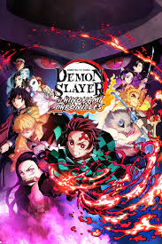Demon Slayer is a Japanese anime and manga series written by Koyoharu Gotouge. It follows Tanjiro Kamado, a kind-hearted boy whose family is slaughtered by demons, with his sister Nezuko the sole survivor—transformed into a demon. Determined to find a cure for Nezuko and avenge his family, Tanjiro joins the Demon Slayer Corps, an organization dedicated to eradicating demons. The series is known for its breathtaking animation, emotional depth, intense battles, and the characters' journey to overcome personal and external challenges.
4. Jujutsu Kaisen

Jujutsu Kaisen is a Japanese anime and manga series written by Gege Akutami. It centers on Yuji Itadori, a high school student with extraordinary physical abilities, who becomes involved in the world of curses after swallowing a powerful cursed object—a finger of the ancient curse, Ryomen Sukuna. Yuji joins the Tokyo Metropolitan Magic Technical College, where he trains as a jujutsu sorcerer to battle curses and protect humanity. The series is known for its exciting fight scenes, intricate magic system, and strong character development.
Romance
1. Horimiya
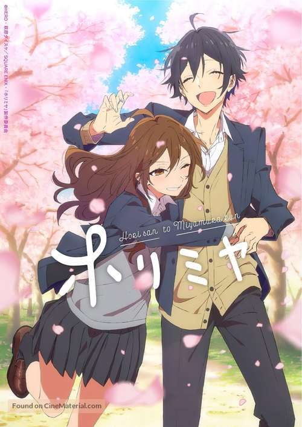Horimiya is a Japanese anime and manga series written by HERO and illustrated by Daisuke Hagiwara. It tells the story of Kyouko Hori, a popular and capable high school girl, and Izumi Miyamura, a quiet and introverted classmate with hidden tattoos and piercings. Despite their contrasting appearances, they discover each other's true selves and form a deep, heartwarming bond. The series beautifully blends humor, romance, and slice-of-life moments, exploring themes of friendship, acceptance, and personal growth.
2. Kimi ni Todoke
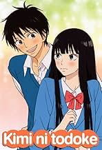Kimi ni Todoke is a Japanese anime and manga series by Karuho Shiina. It follows Sawako Kuronuma, a shy and misunderstood high school girl nicknamed "Sadako" due to her resemblance to a horror character. Despite her timid nature, she befriends her cheerful classmate Shouta Kazehaya, who helps her open up and connect with others. As their friendship deepens, a heartwarming romance blossoms. The series explores themes of love, friendship, and overcoming insecurities with a gentle and uplifting tone.
Psychological
1. Death Note
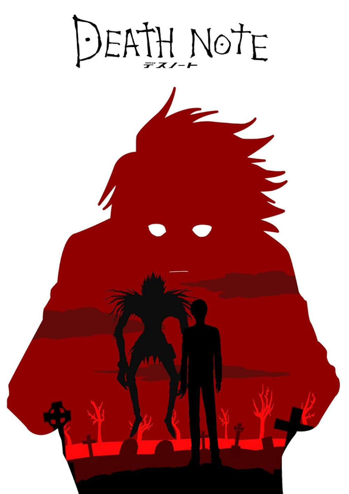Death Note is a Japanese anime and manga series created by Tsugumi Ohba and Takeshi Obata. It follows Light Yagami, a brilliant high school student who discovers a mysterious notebook that allows him to kill anyone by writing their name in it. Light adopts the alias "Kira" and aims to create a crime-free utopia, while the genius detective L tries to stop him. The series is a psychological thriller, exploring themes of morality, justice, and power, with intense mind games and complex character dynamics.
2. Tomodachi Game
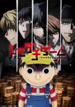Tomodachi Game is a Japanese anime and manga series written by Mikoto Yamaguchi and illustrated by Yuki Sato. It follows Yuuichi Katagiri, a high school student who values friendship above all else. After his class's money for a trip is stolen, Yuuichi and his friends are dragged into the Tomodachi Game, a series of psychological challenges that test their trust, loyalty, and morality. The series delves into themes of betrayal, manipulation, and the dark sides of human nature.
3. Classroom of the Elite
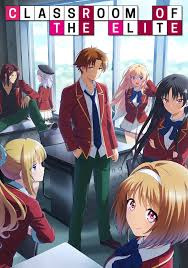Classroom of the Elite is a Japanese anime and light novel series written by Shōgo Kinugasa. Set in the prestigious Advanced Nurturing High School, it follows Kiyotaka Ayanokoji, a mysterious and highly intelligent student placed in Class D, known for its underperformers. As the school operates on a competitive merit-based system, Kiyotaka manipulates events from the shadows to climb the ranks. The series explores themes of social hierarchy, human psychology, and strategic thinking.
Sports
1. Haikyuu!!

Haikyuu!! is a Japanese anime and manga series written by Haruichi Furudate. It follows Shouyou Hinata, a determined volleyball player inspired by a legendary athlete known as "The Little Giant." Despite his short stature, Hinata joins Karasuno High School’s volleyball team, where he teams up with the talented but hot-headed setter Tobio Kageyama. Together, they strive to take their team to the top, facing intense rivals and overcoming personal challenges. The series is celebrated for its dynamic matches, character growth, and inspiring themes of teamwork and perseverance.
2. Blue Lock

Blue Lock is a Japanese anime and manga series written by Muneyuki Kaneshiro and illustrated by Yusuke Nomura. After Japan's national soccer team fails miserably, the Blue Lock project is initiated to create the ultimate striker. Yoichi Isagi, a high school forward, joins 300 other players in a brutal training program where only the best can succeed. The series is known for its intense competition, psychological battles, and themes of ambition, individuality, and self-discovery.
3. Ao Ashi
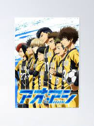Ao Ashi is a Japanese anime and manga series written by Yūgo Kobayashi. It follows Ashito Aoi, a talented yet impulsive young soccer player from a rural town, who catches the eye of a youth coach from a prestigious Tokyo club. Invited to join the team, Ashito embarks on a journey to refine his skills, understand team dynamics, and chase his dream of becoming a professional player. The series focuses on soccer strategy, character growth, and the pursuit of excellence.
4. Kuroko no Basket
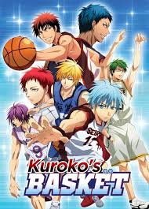Kuroko no Basket (also known as Kuroko's Basketball) is a Japanese anime and manga series written by Tadatoshi Fujimaki. It follows Tetsuya Kuroko, a seemingly invisible but highly skilled basketball player, who was once part of the "Generation of Miracles," a group of exceptionally talented players. After joining Seirin High School's basketball team, Kuroko teams up with the prodigy Taiga Kagami to take on his former teammates in thrilling matches. The series focuses on teamwork, rivalry, and the personal growth of its characters, with fast-paced basketball action and intense competition.
Historical
1. Dororo
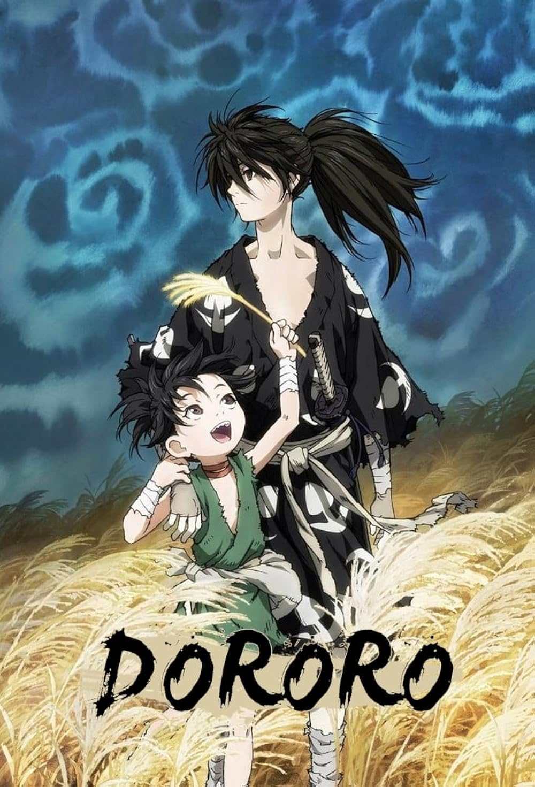Dororo is a Japanese anime and manga series written by Osamu Tezuka. Set in feudal Japan, it follows Hyakkimaru, a young man whose body parts were sacrificed to demons by his father in exchange for power. With the help of Dororo, a young orphaned thief, Hyakkimaru embarks on a journey to reclaim his lost body parts by defeating the demons. The series explores themes of vengeance, redemption, and the human spirit, with a dark and action-filled narrative.
2. Rurouni Kenshin
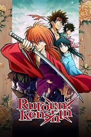Rurouni Kenshin is a Japanese anime and manga series written by Nobuhiro Watsuki. Set in the Meiji Era of Japan, it follows Kenshin Himura, a former assassin known as "Battousai" who has vowed never to kill again. Traveling as a wanderer, he protects the innocent with his reverse-blade sword while seeking redemption for his violent past. The series blends action, historical settings, and deep character development, exploring themes of justice, atonement, and the struggle between past and present.
3. Vinland Saga
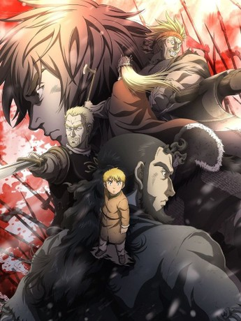Vinland Saga is a Japanese anime and manga series written by Makoto Yukimura. Set in the Viking Age, it follows Thorfinn, a young warrior seeking revenge against Askeladd, the leader of a band of mercenaries who killed his father. As Thorfinn embarks on his journey, he gets caught up in the brutal conflicts between Vikings, kingdoms, and historical events, including the invasion of England. The series is praised for its realistic portrayal of Viking culture, intense battles, deep character exploration, and themes of vengeance, honor, and redemption.